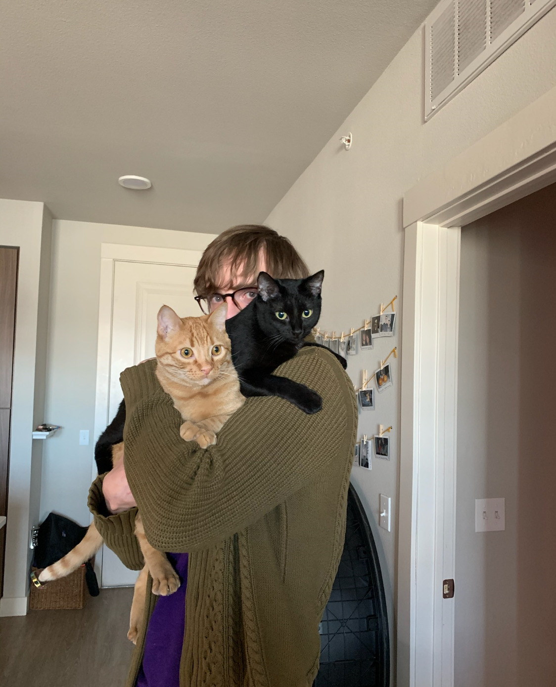

About Me

I am a Cyber Software Engineer working at Lockheed Martin. Over the past several years working at Lockheed I have had the opportunity to work on cutting edge satellite and aircraft technology. My current role is on a test team where I primarily develop Python software to test the network device my team is designing.
In my free time I enjoy going on hikes in the mountains of Colorado, where I live. I have had a love for gaming since I was a kid. These days it is the primary way I stay in touch with friends. Gaming has led me to frequenty upgrading my PC, which has evolved into a small side-business where I build and sell PCs for fun. Lately, I have developed a love of mechanical keyboards. This hobby has grown to be one of my favorite pastimes! Overall, I have a love of tech and engineering, which I try to make a part of my daily life. If not gaming or building PCs and mechanical keyboards, I can be found spending time with my girlfriend, Kaci, and two cats, Parm and Reggi.
